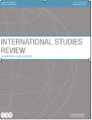

收录于合集

作品简介
【作者】 约瑟夫·格里科（Joseph M. Grieco）是杜克大学的政治学教授，研究领域为国际关系理论、国际政治经济学和国际冲突。他是国际关系领域的新现实主义学者，也是新现实主义和新自由主义间辩论的关键人物。主要著作有《State Power and World Markets: The International Political Economy》、《Cooperation Among Nations: Europe, America, and Non-Tariff Barriers to Trade》。
【编译】 柯孜凝（复旦大学国际关系与公共事务学院硕士研究生）
【校对】 李博轩
【审核】 姚寰宇
【排版】 高佳美
【来源】Grieco. J.(2019). Schools of thought in international relations.
International Studies Review(21), 424-446.
期刊介绍

《国际研究评论》（International Studies Review）创刊于1957年，原名为Mershon International Studies Review，于1999年更改为当前的刊名，卷编号从1重新开始。该期刊是由牛津大学出版社代表国际研究协会出版的同行评审学术期刊，以季刊形式发行。主编是Amanda Murdie。2018年影响因子（Impact Factor）为2.076。
国际关系 中思想流派的问题
The Schools of Thought Problem in International Relations
内容提要
很多学者对国际关系领域的研究和教学被框定为相互竞争的思想流派之间的冲突的趋势感到不满。作者为此研究了两个主要的改革选项，并提供了一条可供选择的发展路径。作者将第一种选项称为分析单一主义（analytical singularism），旨在要求抛弃国际关系学中的各种流派，代之以单一的、统一的国际关系研究框架。由于狭隘本体论和排他性认识论的局限，这一选项被变量偏差的遗漏和无法完全模拟重要的国际进程所困扰。第二种选项是分析折中主义（analytical eclecticism），认为改良的国际关系研究学要通过思考不同流派中因果关系要素间的互动而产生。分析折中主义有前景，但也面临严重的挑战，因其偏好定性方法和特定情境（context- specific）的认识论。随后作者概述了不同流派学者间合作性争鸣的过程，在这一过程中不同流派通过彼此间的批判促进了各流派思想的发展完善，作者指出这种过程是推进国关研究的一种可能的方式。
文章导读
很多学者对国际关系领域的研究和教学被框定为相互竞争的思想流派之间的冲突的趋势感到不满。作者为此研究了两个主要的改革选项——分析单一主义和分析折中主义，并提供了一条可供选择的发展路径。作者首先总结了一些对于美国国际关系学界使用思想流派作为要素的担忧。随后，作者聚焦于与思想流派有关的国际关系学改革的两个主要选项上，即分析单一主义和分析折中主义。在对二者的分析之后，作者提出了基于不同思想流派支持者间协作挑战过程的改革计划，认为这可能是国际关系领域更大的改革方向。
一、 ** ** 国际关系思想流派的问题**** ****
作者认为美国的国际关系研究主要集中在两个分析框架上。首先，国际关系学者经常根据众所周知的想象或层次分析法组织有关国际事务的观念、写作和教学，尤其是由Waltz(1959)和Singer(1961)提出和发展的关于战争起因和和平状况的研究。通过想象或层次分析法，学者们试图确定影响外交政策和世界政治的机制是源自个人层面、国内结构层面还是国家进程层面，抑或是在由国家组成的国际体系层面上。其次，学者们经常在写作和教学中涉及国际关系学的各种思想流派或传统研究。不同的学者和教师偏好不同国际关系理论。但是他们的偏好选择通常围绕着现实主义、自由主义、建构主义、女权主义和马克思主义等学派。近来，人们一直担心思想流派的区分阻碍了国际关系领域的进步。Lake
(2011)认为，对特定流派学者的雇佣让研究传统具体化，从而刺激了知识极端主义，使得研究传统混淆了真实的理论，反而促进了只证实一种或另一种传统的实证研究，并推动支持者将其研究传统推向合理的范围和领域条件之外。Sil和Katzenstein
(2010)认为，各种国际关系学派或它们所称的范式都是有益的。但他们认为那些按照一种或另一种研究范式工作的学者通常只会产出狭隘的研究项目。这些研究项目无法把握现代国际生活的复杂性，对提出更好的政策构想和处理现实世界中严峻的国际问题作用有限。那么应采取什么方案来减少流派研究的弊病，从而促进国际关系研究的改善？作者为此提供了三个
选项。
****二、 选项一： 分析单一模型——一个世界、一个模型 ****
改善国际关系的研究的第一种选择是单一分析主义。Lake (2011,2013)认为应该放弃传统的国际关系思想流派，他提出替代框架包括关注国内政治和制度对外交政策和世界政治的影响。 这一框架具有两个相互关联的特征：依靠外交政策的“开放经济政治”（OEP）模型，并使用由三个词汇——利益、机构和相互作用组成的专业术语。OEP模型的核心是美国利益集团理论的一种变体，注入了理性主义的微观基础，扩展到包括比较政治领域的某些要素，并结合了贸易理论对国际贸易的国内分配后果的不确定观点。从国内机构和政治角度分析外交政策和国际事务具有悠久的历史，因而了解国家外部行为的关键是着眼于国内环境的出发点的说法是有道理的。然而，作者指出该模型至少需要克服两个问题，才能得到国际关系学界的普遍认可。 首先， 分析单一模型的支持 者坚持 的 本体论和认识论使 得 他们 关于国际 事务 的分析 模型容易受到 规范不足 和 忽视变量偏差 的影响。 ****本体论指的是学者对国际政治的有关行动者、过程和情境的定义。国际关系学者在研究国家的外交政策或国家之间的冲突与合作时通常会选择从本体论出发，关注领导人的特征而不是更大的国内环境、经济水平、国家之间的一体化水平或国际权力的分配。认识论则是指学者可以在某个领域中获得的知识以及获取知识的途径。在国际关系研究中，学者在认识论上可能会对某些感兴趣的结果进行简化，并只聚焦于一种或另一种相似的研究方法。 OEP模型从本体论上将国际关系中的结果减少为理性且唯物主义的国内行动者（个人、公司、集团、经济部门和生产的全部要素）的利益、行为和相互作用。这主要通过国内制度或国际制度来运作，但国际条件常常难以衡量且不可知的。基于国内的本体论视角，OEP模型是在偏见的认识论基础上进行的，他们相信聚焦于多个因素的变化构成了特定的因果路径，其他影响结构的因素将被视为常量。然而，就国内变量与国际条件的相关度而言，仅关注国内条件的模型很可能遇到遗漏变量偏差的问题。即便我们假设OEP模型避免了遗漏变量的问题，其也经常会产生探讨外交政策和国际互动不足的问题，甚至可能成为一个失真的模型。如Oatley (2011,2013)指出的，仅关注美国国内的功能失调，导致我们错过了国际金融联系在2008-2009年经济危机中的起因、发端和严重程度以及其在国家内部的重要作用。 OEP 模型 需要解决的第二个问题 是如何为 改善公共政策做出贡献。 ****虽然 OEP在政治经济学中举足轻重，但它在有关如何预防或减轻2008年世界经济危机的政策构想方面几乎没有帮助。首先，OEP模型几乎不加批判地接受现代经济学理论中的一个假设，即相关代理人（个人，家庭，公司和政府）有高度的离心给，并在此基础上展开行动。这一假设使OEP模型的支持者难以预见2000年初的金融机构可能进行违反审慎标准的交易这一行为。其次，基于理性主义的承诺以及仅对国内因素进行分析，OEP模型导致我们对国际关系的预期变得更少，没有看到美国的危机如何通过多种金融渠道传播扩散到世界其他地区。
**
**
三、 选项二： 分析折中主义——为公共利益服务的学术
Sil和Katzenstein (2010)提出了在国际关系研究中取得进展的第二种选择，他们称其为分析折中主义，具有四个主要特征。第一，出于公共利益寻求知识的实用主义思想。Sil和Katzenstein认为学术应该包含实践价值，尤其应该产生“可以潜在地谈到具体的政策和实践问题”的见解。第二，Sil和Katzenstein认为从Robert Merton (1968)的思想中衍生出的中间范围理论（middle-range theories）提供了一种有前途的获取知识的方式，而这些知识也能为国际事务中的“政策和实践”提供帮助。第三，为了提高中层理论在国际关系中的前景，Sil和Katzenstein建议采用广泛的本体论。学者应认识到不同国际关系学派强调的因素以及其相互作用都有可能影响外交政策和世界事务。分析折中主义“假设物质能力分布之间存在复杂的相互作用（通常在现实主义中得到强调），自私的个人和集体行为者所追求的收益（通常在自由主义者中得到强调），并且观念、规范和身份在构筑参与者对世界及其在世界中的角色的理解（由建构主义者赋予）中的作用”。他们认为“分析折中主义是一种构建问题特定的复杂分析框架的努力，该框架能够揭示孤立探索的离散机制和过程之间的相互联系”。第四，分析折中主义的第四个要素关注因果机制本质的认识论。 Sil和Katzenstein认为评估因果机制的一种方法是归纳法（generalizability），观察因果机制在时间和空间上产生预期影响的程度。不过他们并不赞成这种机制的定义，认为“完全有可能存在一种特定时空环境的机制配置”，这种机制可能“在过程中通过跨越情境的重现与否产生即时效应（immediate effects），但通常是不可能重现并可被直接可观察到”。Sil和Katzenstein指出一种机制不一定在不同背景下具有相同的“效果”（因果关系），并强调“普遍性、一致性、特殊性和复杂性都不必然是因果机制的内在属性。 作者认为， 分析折 中 主义 对 学者们研究来自不同 国际关系学派 的自变量 与世界事物 的相互作用 是有意义的。 **** 传统的 国际关系 研究可以作为潜在的资料库， 并可以 从中提取因果基础元素用于构建理论上的相互作用项。 因此，分析折 中 主义构成了国际关系研究的原始改革方案。 但是，分析折中主义的支持者 面临两个挑战： **** 第一个挑战涉及研究方法。 ****尽管 Sil和Katzenstein明确指出，以折中主义为基础的学术研究可以使用许多不同的方法中的任何一种，但他们强调的例子是基于少量观察的定性研究。定性研究通常不太符合使用交互条件的要求，即要区分交互条件的各个基本元素对某些结果的影响和相互作用项本身。对因果因素之间相互作用的评估需要大量信息。但是，这并不意味着大样本统计分析（large-N statistical analyses）是进行此类相互作用效应研究的唯一方法。如果因果要素的相互作用跨越时间，定性分析对于阐明相互作用就是必不可少的。此外，如果研究仅限于评估少量的基本元素和相互作用效应，则可以在研究包含合理数量的观察结果下，采用不同形式的解释性类型学或采用定性比较分析（QCA）的技术。在这种情况下，分析折中主义可以在中等统计样本研究（middle-N studies）的基础上进行。但目前尚不清楚仅通过对单个观察值或一小部分观察值的分析如何实现分析折中主义的相互作用效应。 分析折 中 主义的第二个问题一方面涉及潜在的紧张关系， 这与 广泛的本体论承诺与 针对情境的 特定性和结果的偶然性的认识论之间的矛盾 有关。 **** 另一方面，它的目的是在学术界促进 公共利益中 学术研究。 ****也就是说，分析折 中主义涉及的特定情境和无法普遍化复杂因果关系的不足可能会使执行者难以采用此方法创造与政策相关的学术成果，而因此产生的成果有可能误导公众舆论和政策。分析折中主义对宽泛的本体论和强调特定情境的因果和结果偶然性的认识论可能会产生过度规范化的问题。学者对影响结果的因素的过度规范化（overspecification），极端情况下可能会产生类似于对短期随机运动的描述的分析。反过来，由于学者非常努力地解释事件，只针对该事件的特殊性进行分析，却无法阐明其他事件。过度规范化的问题并非定性分析独有。在许多学科的定量研究中，统计专家将之称为“过拟合数据”（over- fitting the data），或 “曲线拟合”（curve-fitting），“垃圾桶”（garbage can）模型。另一方面不管是定性研究还是定量研究，过度规范都面临着相似的问题。从分析中得出的推论对其他相似的情况的普遍化较低。过度规范化也可能会对研究的预测能力产生严格的限制，因为该预测能力超出了特定研究关注的狭义限制条件（案例或数据集）以外的事件再次发生的可能性。 但 有限 的归纳研 究 仍 是国际关系中一项有价值的工作 。 **** Gaddis (1997) 指出，外交政策和国际事务中事件的高度路径依赖和低可复制性增加了这样的可能性 。 **** 解释和预测是学术研究的两个不同属性 ，尽管 冗长的描述分析不适合进行预测， 但 它们 为 某些重要事实提供 了 全面理解。 分析折 中 主义的许多 支持者 可能会继续致力于大量与 情境 相关的 解释研究， 因此， 普遍性 问题将仍然是分析折 中 主义者 需要 进一步反思的问题。
四 、 选项三： 协作性挑战是IR中多元改革计划的要素
国际关系学的改革计划还有哪些选择？这个问题并没有统一答案。相反，更为合理和符合现实的做法是应以建立一个灵活的改革计划为目标，而学者们可以为改进国际关系研究加入自己的想法。作者在这一部分提供了一种以协作性挑战过程更有效地组织流派间对话的构想。 协作 性 挑战不需要每个人都事先 对如何开展 国际关系研究达成一致， 即它 不需要 在 方法论 上 达成一致。 相反， 这一 过程针对的是在先前的步骤中如何改进 国际关系 研究的问题，即构想有关世界事务的研究问题 。一些学者强调更好的跨学派交流将改善国际关系领域的研究。Hermann（1998）认为不同观点支持者间的对话可能会产生多种好处，其中最明显的是减少了对其他学派的偏见。Wight（2006）认为，如果持不同观点的学者较少关注方法论上的分歧，而是关注本体论上的差异和相似点，如行为体、社会情境和与结果联系的机制，将会更有成效。同样， Jackson（2010）认为，不同学者即使对如何理解世界做出了不同的假设，仍然有可能在三种共同价值观的基础上互动：主张应在逻辑上与假设关联、研究应反映真实与可能的世界，文章应接受公众的批判。必须强调的是，这种对话以及学派本身对于产生出色的国际关系学说并不是必要的。作者认为国际关系领域出色的学术通常不是来自某一学派，而是来自一个或多个层次分析，这通常与学者的见识有关。协作挑战需要确定辩护者和挑战者都同意的可见含义。如果与实际的经验结果相一致，则可以增强后者的观点的可信度。为了确定这种含义，国际关系学者可能会利用最不可能（least- likely）和最可能（most- likely）的经验期望的逻辑，尤其是Rapport（2015）所发展的从不同国际关系理论推导期望的方法。尽管这两种方法的逻辑是在定性研究的背景下形成的，但Levy（2007）强调了该逻辑可以与定性或定量方法结合使用。因被吸引而参与协作挑战过程的学者可能会拥有所谓的社会科学敏感性（social scientific sensibility），即有人愿意相信当我们可以基于某种理论的特定因果机制的来推定、确定并凭借经验评估命题的条件，而这些命题规定与先决条件和世界事务中重要的利益间的概率关联时，就会在获取本领域知识方面取得进步。由于这种敏感性，人们可能不愿将人类行为等同于短期随机运动。但与此同时人们也认识到人类的预期和适应能力的限制使我们不太可能确定那些以确定形式控制人类选择并产生人类行为的例子。相反，我们可以用一种中间方式寻求和测试世界事务中的“弱”联系，即因果过程“表现出可塑性而不是固定控制”的。协作挑战只有在挑战者和辩护者完全自愿参与的情况下才能发挥作用。必须承认，有些学者可能不会被这一过程所吸引。在所有学术领域一样，国际关系领域中也存在“刺猬型”①知识分子（Hedgehogs），即崇尚关于世界政治起源的宏大观念，例如权力、性别、理性或主体间性含义。其中一些“刺猬型”知识分子可能会认为自己已经对世界事务有了基本的了解，甚至可能由于这种信念而产生偏见，认为不值得寻求应对其他挑战的观点，也不认为这些观点足够有趣。相比之下，作为“狐狸型”知识分子（foxes）的国际关系研究学者可能对世界事务的诸多因素和详尽的解释持开放态度，以至于他们太容易接受不同观点的因果主张，无法促使他们朝着要求严苛但有前景的方向发展。最后，寻求不同类型的批判理论或各种形式的后现代理论为国际关系做出贡献的学者可能会认为，协作挑战有可能加强传统的国际关系思想流派。这合乎道德但却不受政治欢迎，因其未能推进人类解放的目标，甚至助力与巩固当前不公正的国际秩序。假设协作挑战的过程是有价值的，是否存在激励机制使得国际关系学者会自愿参与此类挑战？作者认为这样的激励机制可能存在，主要表现为学者们对增强学术声誉、认可的偏好上的增加。如果协作挑战的过程中存在公共元素（可能始于私人对话），那么挑战者和辩护学者都可能会发现这对其自身是有益的。（注释：① 在《俄国思想家》中，以赛亚·伯林提出了一个极其有趣的思想家分类法——“狐狸”与“刺猬”。所谓“狐狸多知，而刺猬有一大知”，即“推诸字面意思，可能只是说，狐狸机巧百出，不敌刺猬一针防御”。伯林用狐狸和刺猬分别比喻两种不同的思想，狐狸指离心式的、散漫的、多层次甚至相互矛盾的多元性思想，刺猬则指一元思想和宿命论。）
五 、 结 论 ****
分析单一主义易于忽略变量偏差，并对其尝试理解的行为解释力不足。尽管学者们肯定会继续强调国内条件与外交政策之间的关系，并通过世界政治扩展这一关系，但他们在寻求理解国际事务中的国家行为时不可能再完全地依赖于这些关系。分析折中主义有很多值得借鉴之处。它指出，了解国际关系没有单一且正确的路径。基于自由教育和自由社会的核心思想，在面对分歧时他们主张多进行辩论，继而产生多元观点。此外，分析折中主义不只将传统流派保留为因果变量的资料库，它还鼓励学者更加努力地识别潜在的重要变量。这些变量与其他传统的变量将共同为人们提供有关国际事务的新思路。然而，分析折中主义似乎倒向了一种难以利用最新建议的的研究策略，从而产生了来自不同流派的互动术语。分析折中主义更倾向于放弃将普遍性作为研究目标。结果，许多学者可能会把其视为通过有限的政策效用对世界政治产生不可证伪的解释。 协作挑战 表明 了改革计划的一个可能 帮助我们在自己的领域中获得更多成果的 因素 。 但 这不会构成 国际关系学 改革计划的全部。 **** 不过， 就 国际关系学本身 以及 其对 其他 观念 的推动 而言 ，跨 国际关系 思想流派的协作挑战可能会帮助我们 深入理 解 我们 所生活的世界。 _ ** _ ** _ ** _ 本文由国政学人独家编译推荐，文章观点不代表本平台观点，转载请联系授权。**__
扫下方二维码查看往期精彩
【媒体国关】媒体变迁中的国关转向：国关文献中的新媒体研究现状 | 国政学人 第298期
【理论研究】权力、结构性权力与美国的衰落丨国政学人 第299期
【方法论衡】戴维·辛格：国际关系中的层次分析问题丨国政学人 第300期
【政策评论】信誉之后：川普时代的美国外交政策丨国政学人 第301期
【霸权研究】大国竞争战略中的经济遏制丨国政学人
第302期
【新刊速递】第10期 | International Studies Review, Volume.21, No.3, 2019
【新刊速递】第11期 | Cooperation and Conflict, Vol. 54, No. 4, 2019
【新刊速递】第12期 | International Affairs, Vol.95, No.6，2019
【新刊速递】第13期|Chinese Journal of International Politics, No.4, 2019
【新刊速递】第14期|Chinese Journal of International Politics, No.3, 2019
分类导览 1
分类导览 2

点“在看”给我一朵小黄花